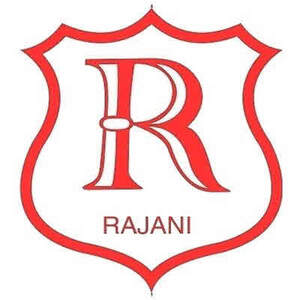

Trade Mark Journal No.2025/032 8 August 2025
UK00004220889 18 June 2025 (6,8,16,20,21,24,35)

- Class 6
- Metal fence panels; fence panels of metal; fences of metal; metal lawn edging; metal border edging; metal landscape edgings.
- Class 8
- Hand tools and implements (hand-operated); screwdrivers; screwdriver bits for hand operated screwdrivers; screwdrivers, non-electric; screwdrivers (hand tools); chisels [hand tools]; saws [hand tools]; shovels [hand tools]; planers [hand tools]; knives [hand tools]; files [tools]; scrapers [hand tools]; wrenches [hand tools]; spanners [hand tools]; drills [hand tools]; hammers [hand tools]; socket sets [hand tools]; sets of socket spanners; gardeners' knives; spades; spades [hand tools]; tool bags [filled]; hand-operated weed cutters; hand-operated weed diggers; hand-operated tools for gardening; tin openers (hand-operated); biodegradable cutlery; plastic spoons, table forks and table knives; disposable knives, forks and spoons; knives, forks and spoons; table cutlery [knives, forks and spoons].
- Class 16
- Stationery; notebooks; writing pads; pens; pencils; erasers; rulers; staplers; paper clips; folders; binders; memo boards; calendars; diaries; adhesive tapes; envelopes; paper; office requisites; self-adhesive tapes for stationery and household purposes; paper envelopes for packaging; glue for the office; glue pens for stationery purposes; office glues; colouring books; copy books; books; sketch pads; drawing pads; canvas boards; canvas panels for artists; craft paper; paper ribbons; paper crafts materials; adhesive plastic film for wrapping; adhesive plastic film for packaging; adhesive paper; self-adhesive plastic sheets for lining shelves; plastic wrap; sheets for wrapping made of plastic material; stickers; stickers [stationery]; wall decorations of paper; gift bags; paper gift bags; paper and cardboard signs; printed paper signs; paperboard trays for packaging food; food bags of paper or plastics; cardboard containers; packaging boxes of cardboard; cardboard cake boards.
- Class 20
- Furniture; household furniture; bathroom furniture; bathroom mirrors; pet furniture; bedroom furniture; beds; wardrobes; chests of drawers; bedside tables; cushions; living room furniture; coffee tables; TV stands; shelving units; bookcases; fireplace screens; dining room furniture; dining tables; dining chairs; kitchen furniture; kitchen cabinets; stools; racks [furniture]; storage furniture; storage boxes; hangers for clothes; garden furniture; outdoor tables; outdoor chairs; garden storage units; door stops, not of metal or rubber; curtain poles; poles for curtains; curtain rods; curtain rails; curtain tracks; roller blinds for use indoors; indoor window blinds; plastic bins [other than dustbins]; non-metal bins; recycling bins, not of metal; mirrors; mounts [frames] for photographs; frames; picture frame brackets; brackets (Picture frame -); displays, stands and signage, non-metallic; wooden signboards; plastic signboards.
- Class 21
- Cookware; bakeware; frying pans; saucepans; casserole pots; stock pots; roasting pans; baking trays; cake tins; colanders; mixing bowls; chopping boards; kitchen utensils; spatulas; ladles; tongs; whisks; graters; peelers; tableware; plates; bowls; serving dishes; mugs; cups; glasses; glassware; storage jars; glass jars; salt and pepper mills; spice sets; dish drainers; dinnerware; enamel cookware; dustbins; pedal bins; plastic bins [dustbins]; litter bins; non-metal recycling bins for household use; swing top dustbins; clip top dustbins; cleaning brushes; mops; buckets; cleaning cloths; dustpans; brooms; laundry baskets; laundry drying racks; pots; vases; flower pots; flower vases; flower baskets; drinkware; drinks containers; foil food containers; disposable aluminium foil containers for household purposes; compostable cups; plastic cups; biodegradable cups; cardboard cups; disposable paperboard bakeware; thermal insulated containers for food or beverage; food storage containers; storage jars; household containers; kitchen containers; trays [household]; trays for household purposes; serving trays; trays for household purposes; trays for domestic use; bread bins; cake trays; enamelled jars; enamelled glass; ceramic figurines; ceramics for kitchen use; vacuum jugs (Non-electric -); vacuum flasks; insulated vacuum bottles; vacuum bottles [insulated flasks]; jugs; flasks; drinking flasks; mortars and pestles; mortars for pounding; pestles for pounding; pressure cookers.
- Class 24
- Household linens; textiles; household textiles; blankets; woollen blankets; curtains; curtains for windows; window curtains; pleated curtains; duvet covers; covers for duvets; cushions (Covers for -); cushion covers; pillow cases; shams (Pillow -); table covers; table cloths.
- Class 35
- Retail services relating to furniture; retail services in relation to pet products; retail services in relation to cookware; retail services in relation to heating equipment; retail services relating to home textiles; retail services in relation to kitchen appliances; retail services in relation to cutlery; retail services in relation to food cooking equipment; retail services in relation to car accessories; retail services in relation to cups and glasses; retail services in relation to cups and drinking glasses; retail services in relation to toys; retail services in relation to luggage; retail services in relation to bags; retail services in relation to arts and crafts materials; retail services in relation to stationery supplies; retail services relating to tableware; retail services in relation to gardening products and horticulture equipment; retail services in relation to furnishings; retail services in relation to domestic electronic equipment.
Rajani Superstore Limited
Representative: Veale Wasbrough Vizards LLP